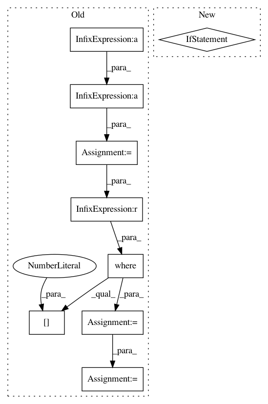

41f6102651d531709fe0c35f711cf06c2df8f20b,art/attacks/iterative_method.py,BasicIterativeMethod,generate,#BasicIterativeMethod#Any#,44
Before Change
// Adversarial crafting
adv_x[active_indices] = self._compute(adv_x[active_indices], targets[active_indices], self.eps_step,
self.random_init)
noise = projection(adv_x[active_indices] - x[active_indices], self.eps, self.norm)
adv_x[active_indices] = x[active_indices] + noise
adv_preds = self.classifier.predict(adv_x[active_indices])
// Update active indices
active_subindices = np.where(target_labels[active_indices] != np.argmax(adv_preds, axis=1))[0]
active_indices = [active_indices[i] for i in active_subindices]
// Stop if no more indices left to explore
if len(active_indices) == 0:
break
After Change
// Adversarial crafting
adv_x = self._compute(adv_x, targets, self.eps_step, self.random_init and i==0)
if self._project:
noise = projection(adv_x - x, self.eps, self.norm)
adv_x = x + noise
return adv_x
def set_params(self, **kwargs):
In pattern: SUPERPATTERN
Frequency: 3
Non-data size: 9
Instances
Project Name: IBM/adversarial-robustness-toolbox
Commit Name: 41f6102651d531709fe0c35f711cf06c2df8f20b
Time: 2018-09-26
Author: mathsinn@ie.ibm.com
File Name: art/attacks/iterative_method.py
Class Name: BasicIterativeMethod
Method Name: generate
Project Name: SheffieldML/GPy
Commit Name: 336f8e11c48bb4e749b9f389907c450e44f02786
Time: 2013-10-28
Author: alan.daniel.saul@gmail.com
File Name: GPy/examples/regression.py
Class Name:
Method Name: toy_poisson_rbf_1d_laplace
Project Name: SheffieldML/GPy
Commit Name: 336f8e11c48bb4e749b9f389907c450e44f02786
Time: 2013-10-28
Author: alan.daniel.saul@gmail.com
File Name: GPy/examples/regression.py
Class Name:
Method Name: toy_poisson_rbf_1d